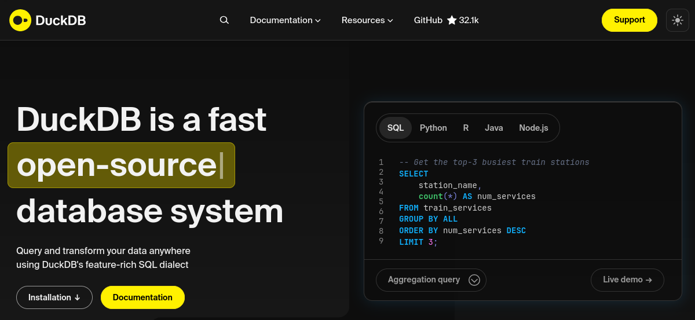

DuckDB

O DuckDB é um sistema de gerenciamento de banco de dados (SGBD) analítico (OLAP) projetado para análise de dados. É conhecido por sua velocidade, facilidade de uso e capacidade de processar diretamente arquivos em formato como Parquet, CSV e JSON.
Info
O DuckDB é otimizado para consultas analíticas.
Oferece execução columnar e processamento vetorizado para alta performance.
Características principais
- In-process: Roda como uma biblioteca embarcada, sem necessidade de servidor separado
- ACID compliant: Garante consistência transacional
- SQL padrão: Suporte completo ao SQL com extensões para análise
- Formatos diversos: Lê diretamente Parquet, CSV, JSON e outros formatos
- Zero-copy: Acessa dados sem necessidade de importação prévia
- Parallel processing: Execução paralela automática de consultas
Preparando o ambiente
Vamos configurar um ambiente Python para trabalhar com DuckDB e os dados do warm up da primeira aula.
Obtendo os dados
Vamos utilizar os dados do S3 da aula de warm up para praticar com o DuckDB.
Interface Python
Apesar do DuckDB ter API compatível com diversas linguagens (C, Go, Rust, R, etc.), vamos trabalhar principalmente através da interface Python do DuckDB.
Atenção!
Para os códigos experimentais na sequência, você pode tanto criar um jupyter notebook ou utilizar arquivos .py, conforme sua preferência.
Dica
A estrutura do diretório será:
./
├── dados
│ ├── station.csv
│ ├── status.csv
│ ├── trip.csv
│ └── weather.csv
├── requirements.txt
└── src
├── codigos-duckdb.ipynb # Caso tenha criado
└── duck_inicio.py
Lendo dados diretamente
Uma das grandes vantagens do DuckDB é a capacidade de ler dados diretamente de arquivos, sem necessidade de importação prévia.
Lendo arquivos CSV
Exercise
Answer
import duckdb
conn = duckdb.connect()
query = """
SELECT COUNT(*) AS qtde_viagens
FROM '../dados/trip.csv'
"""
result = conn.execute(query).fetchdf()
print("Quantidade total de viagens:")
print(result)
conn.close()
Consultas analíticas
Criando tabelas e databases
Database persistente
Criando tabelas a partir de arquivos
Info
Vantagem de criar tabelas no DuckDB em vez de ler arquivos diretamente a cada consulta:
Vantagens de criar tabelas:
- Performance: Dados ficam otimizados internamente
- Índices: Podem ser criados para acelerar consultas
- Joins: Mais eficientes entre tabelas do mesmo database
- Persistência: Dados ficam disponíveis entre sessões
Vantagens de ler diretamente:
- Flexibilidade: Dados sempre atualizados no arquivo fonte
- Espaço: Não duplica armazenamento
- Simplicidade: Útil para protótipos e análises rápidas
Conforme conversamos na primeira aula, o Parquet é um formato columnar altamente eficiente, especialmente adequado para análises com DuckDB.
Exportando para Parquet
Lendo arquivos Parquet
Exercise
Answer
O Parquet é mais eficiente porque:
- Formato columnar: Lê apenas as colunas necessárias para a consulta
- Compressão: Dados similares ficam juntos, comprimindo melhor
- Metadados: Estatísticas permitem pular blocos irrelevantes
- Encoding: Otimizações específicas por tipo de dado
Análises avançadas
Window Functions
Exercise
Exercise
O DuckDB integra perfeitamente com Pandas, permitindo usar DataFrames como tabelas.
Exercise
Exercise
Casos de uso práticos
O DuckDB é excelente para processos ETL (Extract, Transform, Load).
Exercise
Exercise
Exercícios finais
Exercise
Answer
DuckDB é melhor para:
- Análise exploratória de dados
- ETL/ELT em arquivos (Parquet, CSV)
- Prototipagem rápida
- Análises científicas
- Integração com notebooks/Python
PostgreSQL é melhor para:
- Aplicações transacionais (OLTP)
- Sistemas multi-usuário
- Requer ACID rigoroso
- Integração com aplicações web
- Dados que mudam frequentemente
Exercise
Exercise